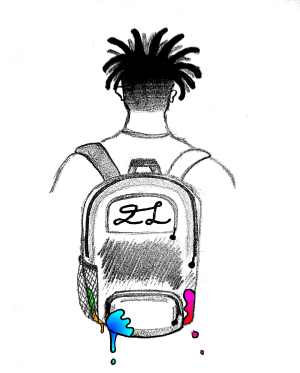
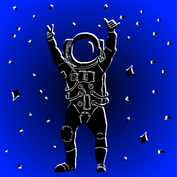

He's twisting his hair
He's little and scared
Sitting in chairs
that are brittle and frail
He whispers and stares
He wishes and swears
He riddles and dares
himself to care
about the whistles and bells
that come in the mail
To him, everyone else's ideas are stale
He doesn't want to follow
He wants to leave a trail
He's timid and fair
He has rhythm and flare
He keeps it hidden, never written
and it's simple and rare
He has stories that are far too cryptic to share
Content that will allow his artistry to thicken in layers
The hypnosis is broken and he's on to his next class
He's noticed as open and things go through his head fast
Completely oblivious of his eccentric abnormality
Concretely insidious and is affected by remote galaxies
Lightning quick synapses firing within each neuron
Sighting is inactive, tiring him when it turns on
He begins to vigorously strike the paper with astonishing speed
He depicts the bitter and sweet, writes the nature of commons in need
Immediate surroundings are non-existent when in this occasional trance
The shape of the man, the sensational dance from another world
are transcribed by the rage in his hands
When aware, he's calm and enjoys to write
about the toys he liked back in the day
and the void inside that laughs in his face.
He records his thoughts, his dreams,
His plots, and his schemes
The connection he has with foreign worlds is beyond anyone's knowledge
Recollection, he lacks
His soaring blurs fit eons and he runs college
Inking down the myriad of lemures that continue to haunt his brain
Thinkin' 'bout the fear he had and the words that he should use to draw his pain

It's been a while since I've seen any stars
As the sun's cavalry, they battle me and teach me a lot
They leave me with scars
Then flee and depart
They've given me the ability to see in the dark
Another diagnosis of potent psychosis
Medicines are impediments
They riddle me soulless
Leave in solace
In the middle of the park
Losing sleep, outside
In search for a star

| Poem | Date Written | Number of Lines | Number of Words |
|---|---|---|---|
| Twisted Curls | 06/2017 | 19 | 99 |
| Synapses | 01/2018 | 21 | 192 |
| It's been a While | 07/2019 | 12 | 69 |